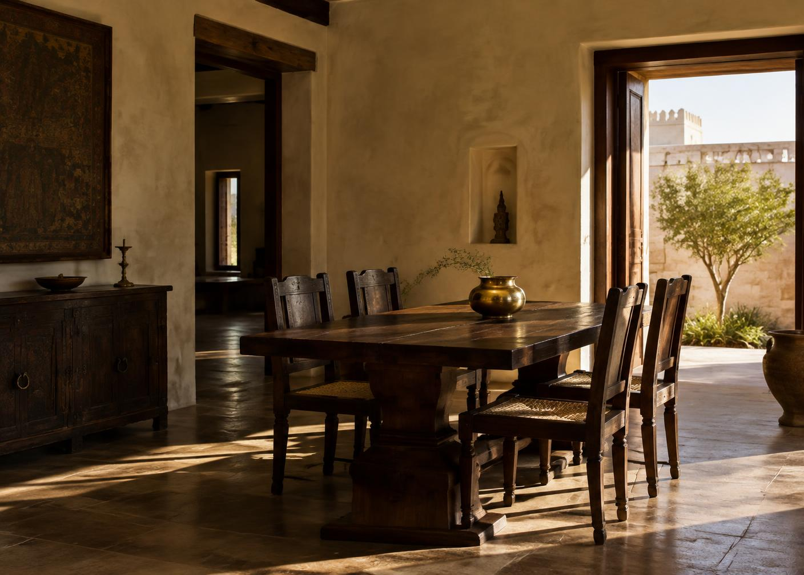
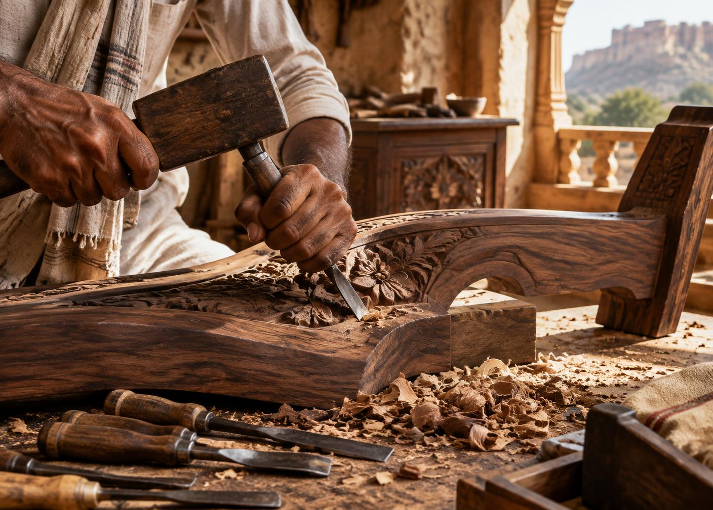

Aakaar / आकार / Form
Indian in origin.
Open in spirit.

A studio born from a wish to make fewer, better things.
Aakaar began in Jaipur with a sketchbook, a borrowed workshop, and a belief that Indian craft belongs in the present—not behind glass.
Today, we work with a close network of carpenters, carvers, cane weavers, and finishers across Rajasthan and North India.
What matters
Local before distant
Patina before perfection

“A piece is finished when every touch feels considered.”
— Mohan Ji, master woodcarver
Come by
See the grain.
Feel the weight.
Our Jaipur studio is open by appointment, Monday to Saturday.
22, Civil Lines
Jaipur, Rajasthan 302006